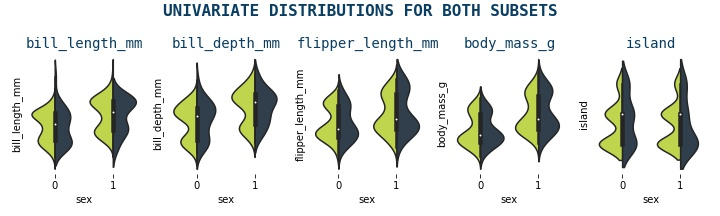
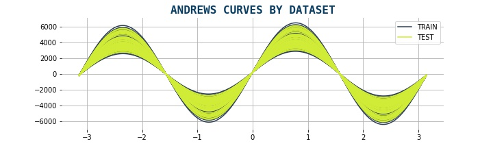
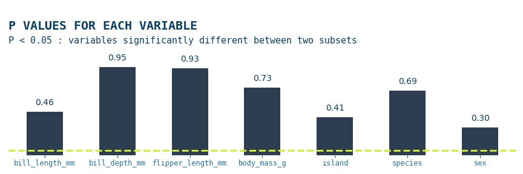
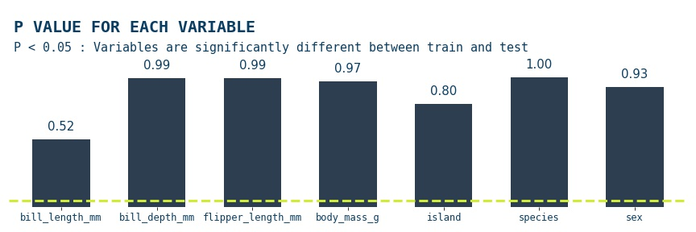

Comparison of Subsets¶
An important concept in machine learning is model generalisation & performance deterioration
- When we train a model, we perform an optimisation step, using metrics and/or loss values we can understand how well our model is understanding the relation between all data points and features in the input data we feed it
- Going through this process, we can tune a model so that it performs well on the data that we use to train it
Background¶
However, what if we receive some new data (for example after some time), which is also a subset of the entire dataset but it contains a slightly different data relation structure, our models may not perform as well as they did on the data it was trained on, by comparing the metrics of both dataset, we can get an idea of how similar our datasets are.
The above approach to comparing the two datasets isn't the most ideal, but it should raise a question; are there any other approaches that we can use to compare different subsets of data? This is what we'll look at in this post!
Subset Comparison Approaches¶
We'll look at these approaches:
Violin plotscomparing the univariate distribution between two subsetsAndrews Curves, which helps us distinguish outliers that exist in the two datasetsANOVA, to establish whether the difference between the two subsets is significant or not- *
KS Statistic*to check whether the each variable in train/test comes from the same distribution Machine Learning, to classify the two subsets and compare their metrics
The Dataset¶
We'll use a favourite dataset of mine, which we can load very easily load via seaborn, it contains three categorical variables, so we'll use LabelEncoder to encode them. Then we'll create two subsets from this dataset
import pandas as pd
import numpy as np
import matplotlib.pyplot as plt
import seaborn as sns
from sklearn.model_selection import train_test_split
from seaborn import load_dataset
from sklearn.preprocessing import LabelEncoder
data = load_dataset('penguins')
data = data.dropna()
data['island'] = LabelEncoder().fit_transform(data['island'])
data['species'] = LabelEncoder().fit_transform(data['species'])
data['sex'] = LabelEncoder().fit_transform(data['sex'])
Then we create two subsets from the same dataset, creating X_train and X_test, we'll use these subsets as well as the main data, having created a new column dataset that indicates which subset the data belongs to
# function
def PrepareData():
features = ['bill_length_mm','bill_depth_mm','flipper_length_mm','body_mass_g','island','species','sex']
X = data[features].copy()
y = data['sex']
X_train, X_test, y_train, y_test = train_test_split(X, y,
test_size=0.20,
random_state=42)
return X_train, X_test, y_train, y_test
# prepare data
X_train, X_test, y_train, y_test = PrepareData()
X_train['dataset'] = 'train'; X_test['dataset'] = 'test'
data = X_train.append(X_test)
Visualisation Approaches¶
Violin Plot¶
A violin plot is a type of data visualization that combines the features of a boxplot and a kernel density plot. It is used to display the distribution of a dataset and shows the median, quartiles, and interquartile range (IQR) like a boxplot, but also displays the shape of the distribution through a density curve. The width of the violin at any point represents the density or frequency of data at that point. Violin plots are useful for comparing the distributions of multiple datasets and identifying any differences or similarities between them
def violin_plots(data):
# create subplots
f, axes = plt.subplots(1,5,figsize = (10,3))
ax0 = axes.ravel()[0]
# set ticks to non
for ax in axes.ravel():
ax.set_xticks([])
ax.set_yticks([])
features = data.drop('sex', axis=1).columns[:-2]
# iterate over all variables and generate violin plot
for i, col in enumerate(features):
ax = axes.ravel()[i]
g = sns.violinplot(x='sex', y=col, hue='dataset',
ax=ax,
data=data,
split=True,
palette = ['#d0ec37', '#2c3e50'])
ax.set_title(col, fontsize=14, color='#0a3d62', fontfamily='monospace')
ax.set_ylabel('')
ax.set_xticks([])
ax.set_xlabel('');
ax.get_legend().remove()
sns.despine(top=True, right=True, left=True, bottom=True)
plt.suptitle('UNIVARIATE DISTRIBUTIONS FOR BOTH SUBSETS',
fontsize=16,
color='#0a3d62',
fontweight='bold',
fontfamily='monospace')
plt.tight_layout()
plt.savefig('violin3.png')
violin_plots(data)

Andrew Curves¶
Andrews curves are a type of data visualization that represent each observation in a dataset as a curve. The curve is generated by mapping the values of each feature in the dataset to a sine function, which is then plotted on a two-dimensional plane. Each curve represents one observation in the dataset, and the shape of the curve reflects the values of the features for that observation. It preserves means, distance, and variances. They curves are useful for visualizing the overall structure of a dataset and identifying any patterns or trends that may exist. They can also be used to compare the shapes of curves between different datasets to identify any differences or similarities
It is given by formula:
from pandas.plotting import andrews_curves
data2['dataset'] = data2.dataset.replace({1:'TRAIN',2:'TEST'})
data3 = data2.drop('y', axis=1)
def plot_andrews(df):
f,ax = plt.subplots(1,1, figsize=(15,5))
andrews_curves(data3, "dataset", ax=ax, color = ['#2c3e50','#d0ec37'])
for s in ['top','right','bottom','left']:
ax.spines[s].set_visible(False)
plt.title('ANDREWS CURVES BY DATASET', fontsize=16, color='#0a3d62', fontfamily='monospace', fontweight='bold')
sns.despine(top=True, right=True, left=True, bottom=True)
plt.savefig('andrews.png')
plot_andrews(data3)

Statistical Approaches¶
ANOVA Test¶
ANOVA (Analysis of Variance) is a statistical test used to determine whether there are significant differences between the means of two or more groups. It compares the variance within each group to the variance between the groups to determine if the differences in means are statistically significant. To use this approach, we'll use the statsmodel library, specifically the ols and anova_lm methods. The null hypothesis is that there is no significant difference between the groups being compared. More at statsmodels
import statsmodels.api as sm
from statsmodels.formula.api import ols
from statsmodels.stats.multicomp import pairwise_tukeyhsd
from statsmodels.stats.multicomp import MultiComparison
def anova_test(data):
# anova test
df_res = pd.DataFrame()
for col in data.columns[:-1]:
model = ols(f'{col} ~ dataset', data = data).fit()
res = sm.stats.anova_lm(model, typ=2)
df_res['var'] = col
df_res = anova_results.append(res)
# plot result for PR(>F)
f, ax = plt.subplots(1,1,figsize=(12,4))
anova_results[['var','PR(>F)']].dropna().set_index('var')['PR(>F)'].plot(kind='bar', ax=ax, color = '#2c3e50', width=0.6)
ax.set_xticklabels(ax.get_xticklabels(), rotation=0, color='#2471a3', fontfamily='monospace', fontsize=12)
ax.set_xlabel('')
ax.set_yticks([])
for s in ['top','right','bottom','left']:
ax.spines[s].set_visible(False)
plt.axhline(y = 0.05, color = '#d0ec37', linestyle = '--', lw=3)
ax.text(-0.5,1.35,'P VALUES FOR EACH VARIABLE', fontsize=20, fontweight='bold', color='#0a3d62', fontfamily='monospace')
ax.text(-0.5,1.2,'P < 0.05 : Variable is significantly different between two subsets', fontsize=15, color='#0a3d62', fontfamily='monospace')
for bar in ax.patches:
ax.annotate(
format(bar.get_height(), '.2f'),
(bar.get_x() + bar.get_width() / 2, bar.get_height()),
ha='center', va='bottom',
size=14, xytext=(0, 8), color = '#0a3d62',
textcoords='offset points'
)
plt.tight_layout()
plt.savefig('anova.png')
anova_test(data2)

The anova results show that for all features p>0.05, thus the null hypothesis is accepted; there is no significant difference between the groups being compared
Kolmogorov-Smirnov Test¶
The Kolmogorov-Smirnov test is a statistical test used to determine whether a sample distribution differs significantly from a known or expected distribution. It compares the empirical cumulative distribution function (CDF) of the sample to the theoretical CDF of the expected distribution and calculates a test statistic that measures the maximum distance between the two functions. We'll be using the scipy.stats.ks_2samp module, which gives us the option to use three types of null & alternative hypotheses, by default the two-sided option is used, so that will be our pair, so that's what we'll use. The null hypothesis is that the two distributions are identical, F(x)=G(x) for all x; the alternative is that they are not identical
from scipy.stats import ks_2samp
def ks_test(X_train,X_test):
ksdf = pd.DataFrame()
alpha = 0.05
for col in X_train.columns[:-2]:
s, p = ks_2samp(X_train[col], X_test[col])
ksdf = ksdf.append(pd.DataFrame({
'kstat' : [s],
'pval': [p],
'variable': [col],
'reject_null_hypo': [p<alpha]
}), ignore_index=True)
f, ax = plt.subplots(1,1,figsize=(15,3))
ksdf[['variable','pval']].set_index('variable')['pval'].plot(kind='bar', ax=ax, color = '#2c3e50', width=0.6)
ax.set_xticklabels(ax.get_xticklabels(), rotation=0, color='#0a3d62', fontfamily='monospace', fontsize=12)
ax.set_xlabel('')
ax.set_yticks([])
for s in ['top','right','bottom','left']:
ax.spines[s].set_visible(False)
plt.axhline(y = alpha, color = '#d0ec37', linestyle = '--', lw=3)
ax.text(-0.5,1.35,'P VALUE FOR EACH VARIABLE', fontsize=20, fontweight='bold', color='#0a3d62', fontfamily='monospace')
ax.text(-0.5,1.2,f'P > {alpha} : None of variables are significantly different between train and test', fontsize=15, color='#0a3d62', fontfamily='monospace')
for bar in ax.patches:
ax.annotate(
format(bar.get_height(), '.2f'),
(bar.get_x() + bar.get_width() / 2, bar.get_height()),
ha='center', va='bottom',
size=15, xytext=(0, 8), color = '#0a3d62',
textcoords='offset points')
plt.savefig('ks_stat.png')
ks_test(X_train,X_test)

The Kolmogorov-Smirnov test results show that for all the features in the data p>0.05, so the null hypothesis is accepted; for all the features the two subsets the two distributions are identical
Machine Learning Approach¶
As we mentioned in the beginning we can utilise machine learning to compare different subsets, in fact this probably is the most common approach as it is a necessity everytime you train a new model, you need to validate your model. As a result, comparing metrics on different subsets of data is quite standard. However, what we will do here a little different. We will set our taget variable as dataset & treat the problem as a binary classification problem, we'll use the CatBoostClassifier as our model with preset optimised hyperparameters
from sklearn.model_selection import train_test_split
from catboost import CatBoostClassifier
from sklearn.metrics import roc_auc_score
def model_approach(X_train,X_test):
X_train['label'] = 0
X_test['label'] = 1
data = X_train.append(X_test)
X = data.drop('label',axis=1)
y = data.label
X_train, X_test, y_train, y_test = train_test_split(X,y,
test_size=0.20,
random_state=42)
# train & predict on subsets
model = CatBoostClassifier(verbose=False)
model.fit(X_train,y_train.values)
ym_train = model.predict(X_train)
ym_test = model.predict(X_test)
# get AUC metric results
print('TRAIN AUC :',round(roc_auc_score(y_train.values, train_preds),4))
print('TEST AUC:',round(roc_auc_score(y_test.values, test_preds),4))
model_approach(X_train,X_test)
# TRAIN AUC : 0.50
# TEST AUC: 0.50
Conclusion¶
In this post, we tried different approaches to compare datasets. We can do this in a number of ways, using visualisations, statistics & machine learning approach. In our problem, we could conclude that the two subsets that we created at the start of the post There doesn't seem to be an ideal method which fits the problem at hand, so its good practice to do a number of checks when comparing datasets datasets
Thank you for reading!
Any questions or comments about the above post can be addressed on the mldsai-info channel or to me directly shtrauss2, on shtrausslearning or shtrausslearning